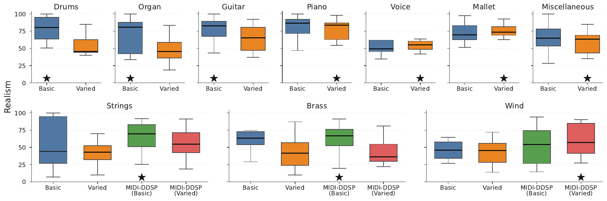

Recipe listening ablation
Question
Which open render recipe — basic GM bank, varied redistributable soundfonts, or MIDI-DDSP hybrids over those fallbacks — do listeners rate as more realistic, by instrument category?
Setup
- Categories (figure order): drums, organ, guitar, piano, voice, mallet, miscellaneous, strings, brass, wind.
- Conditions:
- basic — single GM bank
SGM-V2.01 - varied — shortlist of redistributable banks per category (FluidR3_GM, GeneralUser GS, Arachno, Airfont) plus light reverb
- MIDI-DDSP over basic / over varied — neural synth for eligible monophonic strings, brass, and winds (upsample 16→44.1 kHz); FluidSynth fallback for polyphonic parts and instruments outside the MIDI-DDSP inventory
- basic — single GM bank
- Protocol: each trial scores a 10 s stem excerpt for perceived realism (0–100); two trials per category; N = 8 listeners.
- Design rule: highest mean by default; when basic and varied are close, retain varied for timbral diversity.
Metrics
Per-listener mean realism by category and condition. Production SPDMX freezes the starred condition per category from the listening figure in the paper.
Results

Frozen hybrid recipe (production SPDMX):
- basic — drums, organ, guitar
- varied — piano, voice, mallet, and miscellaneous classes
- MIDI-DDSP over basic — strings, brass
- MIDI-DDSP over varied — wind
Stem demos are on Listen. Full soundfont attribution: Soundfonts.
Caveats: small listener pool; synthetic-reference study does not establish corpus-wide absolute realism; MIDI-DDSP stems remain band-limited after upsample from 16 kHz. Voice-class tracks use choir/voice soundfonts; lyric singing synthesis is out of scope.
Code
experiments/ablation_listening/